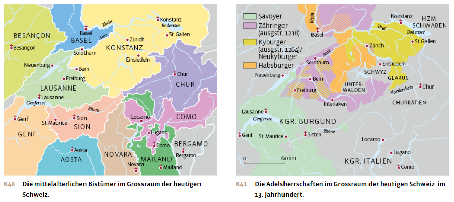
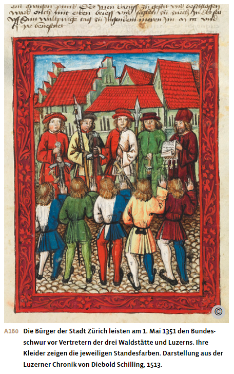
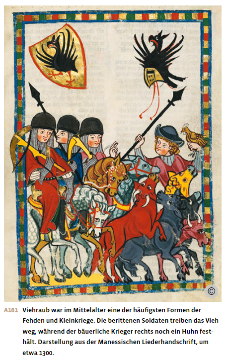
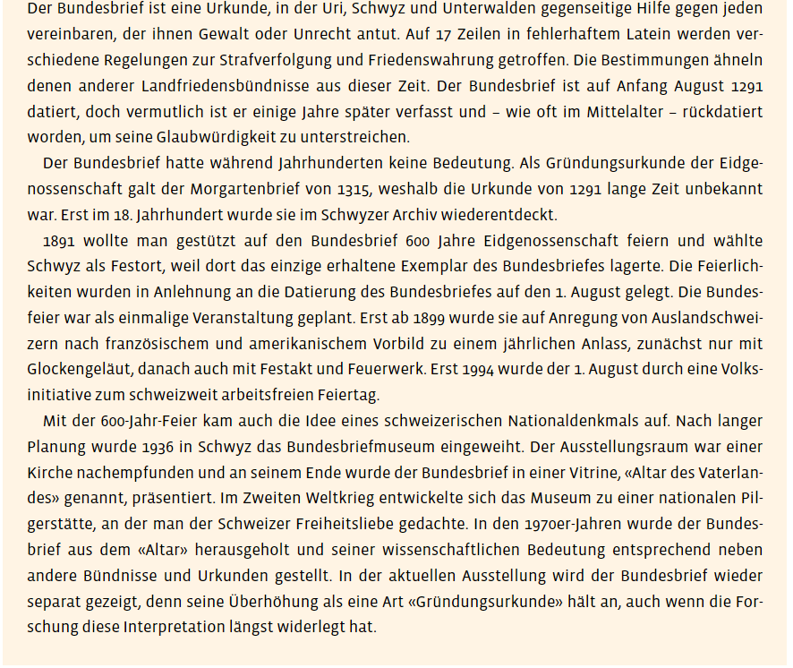
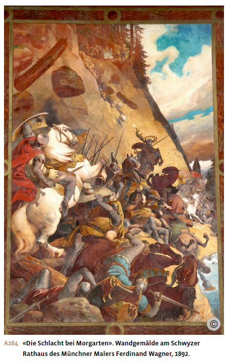
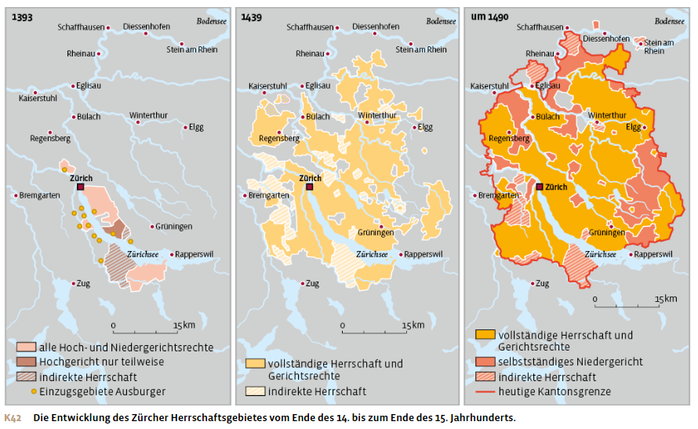
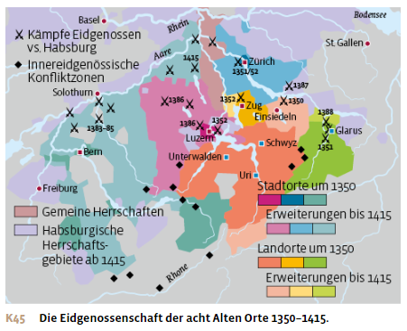
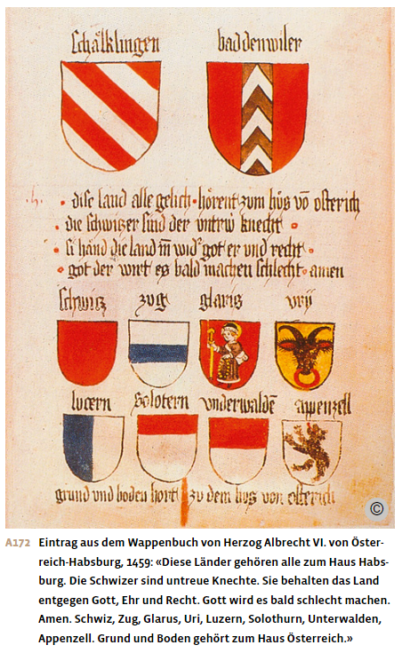
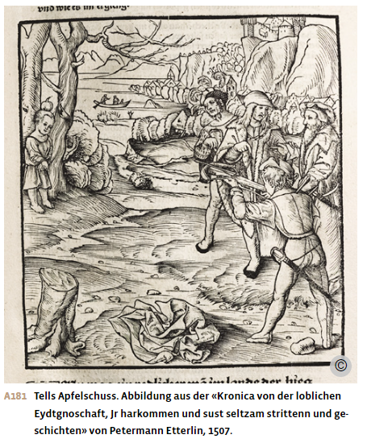
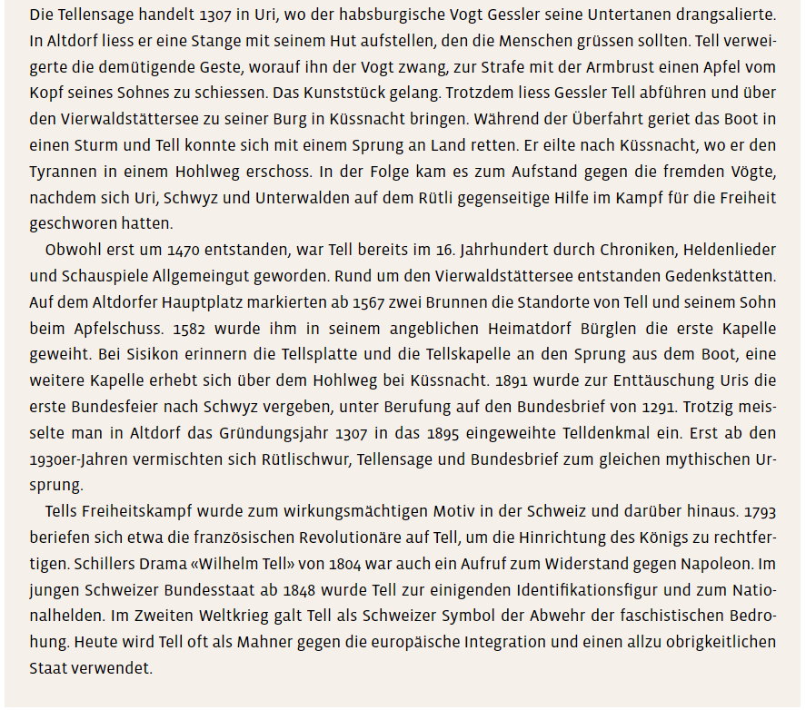

Materialdossier: Eidgenossenschaft
Vollständiger Inhalt des Unterrichtsdossiers · Mittelalter_Eidgenossenschaft.docx
Die Entstehung der Eidgenossenschaft
Der Raum der Schweiz im 13. Jahrhundert
Mittendrin und doch am Rande
Um 1400 stellte sich das Bündnissystem der Eidgenossenschaft bereits als ein relativ kompaktes Gebilde dar. Hundert Jahre zuvor, um 1300, war das jedoch noch ganz anders. Die Bewohner und Bewohnerinnen des Gebiets zwischen Alpenkamm und Jura hatten damals weder eine gemeinsame Identität noch eine gemeinsame Geschichte. Der ganze Raum war Teil des grossen Heiligen Römischen Reiches, und zwischen den Innerschweizer Talschaften und den Städten Zürich und Bern bestanden nur lose Verbindungen. Solche lockeren, oft nur temporären Bündnisse waren im Heiligen Römischen Reich in dieser Zeit nichts Aussergewöhnliches. Es ist deshalb wichtig, den geografischen Raum, in dem sich dieses Bündnissystem entwickelte, näher zu betrachten. Denn nur so lässt sich verstehen, warum gerade diese Bündnisse überlebten und sich im Laufe der Zeit zu einem Staatenbund verfestigten, aus dem schliesslich im 19. Jahrhundert die Schweiz als Nation hervorging.
Das Gebiet der späteren Eidgenossenschaft war im Hochmittelalter für die Könige und Kaiser des Heiligen Römischen Reiches ein wichtiges Transitland, da es zwischen dem deutschen und dem italienischen Reichsteil lag. Dies änderte sich jedoch nach dem Tod des Stauferkaisers Friedrich II. im Jahr 1250. Er hatte vergeblich versucht, die aufstrebenden italienischen Städte, allen voran Mailand und Venedig, und den päpstlichen Kirchenstaat enger an sich zu binden. Den römisch-deutschen Königen und Kaisern gelang es nicht mehr, ihre Herrschaft in Italien wiederherzustellen. Sie konzentrierten sich fortan auf den deutschen Reichsteil, wodurch das Gebiet der späteren Schweiz zu einem Randgebiet des Reiches wurde.
Auch kirchenpolitisch handelte es sich beim schweizerischen Raum um ein Grenzland. Die Bistumsgrenzen gingen weitgehend auf die Karolingerzeit zurück und bildeten die stabilste Verwaltungsstruktur des mittelalterlichen Reiches. Insgesamt acht Bistümer teilten sich damals das Gebiet der heutigen Schweiz auf. Die Eidgenossenschaft entwickelte sich abseits der Machtbereiche der Bischöfe an den Grenzen der Bistümer Konstanz, Lausanne, Sion, Chur und Mailand. Diese Randlage war für die Entwicklung der späteren Eidgenossenschaft von grosser Bedeutung. Sie ermöglichte es insbesondere den aufstrebenden Reichsstädten Bern und Zürich, eigene Territorialherrschaften aufzubauen. Dies umso mehr, als dass diese Städte keine Bischofssitze waren. Während die Entwicklung von Bischofsstädten wie Lausanne oder Konstanz weitgehend von den finanziellen und politischen Entscheiden ihrer Kirchenfürsten bestimmt wurde, verfügten die Städte ohne bischöflichen Stadtherrn über mehr Freiheiten und Handlungsspielräume.

Die Auflösung der alten Adelsstrukturen
Entscheidend für die Entstehung der Eidgenossenschaft war auch der rasche Wandlungsprozess, in dem sich der Adel in diesem Raum um 1300 befand.
Der standesgemässe adlige Lebensstil war für viele Familien ruinös. Hinzu kam der Wandel der Grundherrschaft: Die Zersplitterung der Herrschaftsrechte, aber auch Erbteilungen verringerten die Einkünfte der Grundherren. Zudem wurden die Rechte des Adels in dieser Zeit durch die wachsenden Ansprüche der Landesherren und des Königs beschnitten. Diese setzten Landvögte (von lat. «advocatus», Rechtsbeistand, Verteidiger) ein, die sie unabhängig von der Grundherrschaft in einem bestimmten Territorium direkt vertraten. Die Vögte wurden mit weitreichenden Kompetenzen in Verwaltung, Rechtsprechung und Militärwesen ausgestattet. Vor allem aber zogen sie direkt Steuern und Zölle ein. Dies schwächte die Stellung und die Einkünfte der adligen Grundherren und liess viele von ihnen verarmen.
Hinzu kam, dass viele hochadlige Geschlechter aus dem süddeutschen und schweizerischen Raum in dieser Zeit ausstarben: die herzogliche Linie der Zähringer 1218, die Hauptlinie der Kyburger 1264, die Grafen von Rapperswil 1283. Der Aufbau adliger Territorialherrschaften geriet dadurch gegenüber anderen Reichsteilen ins Hintertreffen und gelang längerfristig nur den Familien der Savoyer und der Habsburger, wobei das Gebiet der späteren Eidgenossenschaft im Grenzgebiet dieser aufstrebenden Adelsfamilien lag.
Die Auflösung der alten Adelsstrukturen führte zu einer politischen Instabilität an der Wende zum 14. Jahrhundert. Um Sicherheit und Stabilität dennoch zu gewährleisten, schlossen Städte und Talschaften häufig lokale Bündnisse, um den Frieden untereinander zu sichern. […]
Pässe und Politik
Ab dem Ende des 12. Jahrhunderts nahm der Transitverkehr über die Alpen zu. Von den norditalienischen Handelszentren Venedig und Mailand aus suchten italienische Kaufleute Wege über die Alpen zu den Messen in der Champagne und nach Nordeuropa. Zunächst verlief der Handelsverkehr über die Pässe in Graubünden und über den Grossen St. Bernhard im Wallis.
Zwischen 1218 und 1230 entstand mit dem Gotthard eine weitere Transitroute. Der aufblühende Warenverkehr brachte in den Regionen entlang dieser neuen Route Wohlstand und veränderte sie nachhaltig, wirtschaftlich, aber auch militärisch und politisch. Die geografische Nähe zu den reichen Städten Norditaliens band die Täler in deren Wirtschaft mit ein. Die Bergbevölkerung spezialisierte sich auf Viehwirtschaft und lieferte Fleisch und Käse in die Städte.
Auch die Habsburger und die Savoyer profitierten durch Zölle vom steigenden Transitverkehr über die Alpen und kämpften daher um die Kontrolle der wichtigsten Verkehrswege. Die Savoyer konzentrierten sich dabei auf das Wallis, die Habsburger auf den Weg zum Gotthard. Die Zolleinnahmen waren beträchtlich: 1291 erwarben die Habsburger die Stadt Luzern vom Kloster Murbach. Bereits nach acht Jahren hatten sie den Kaufpreis durch die Zolleinnahmen aus dem Gotthardtransit wieder hereingeholt, und dies, obwohl der Gotthard bei weitem nicht der einträglichste Alpenpass war.
Die Erschliessung des Gotthards hatte auch politisch-strategische Folgen. Aufgrund der Nähe zu Italien boten sich die Gebiete von Schwyz und Uri den Königen des Heiligen Römischen Reiches an, um Soldaten für ihre Feldzüge gegen den Papst und die oberitalienischen Städte zu rekrutieren. Dies war auch der Grund, weshalb verschiedene Könige und Kaiser der Talschaft Uri 1231 und der Talschaft Schwyz 1240 mit sogenannten «Königsbriefen» das Privileg der Reichsunmittelbarkeit verliehen. Dies bedeutete, dass sie keinem Landesherrn, sondern direkt dem König und seiner Gerichts- und Steuergewalt unterstanden. Diese Privilegien mussten jedoch von jedem neuen König bestätigt und gegen konkurrierende Ansprüche verteidigt werden. Die Wahrung der Reichsunmittelbarkeit wurde deshalb zum wichtigen politischen Ziel der Innerschweizer Talschaften.
Landfriedensbündnisse zur Friedenssicherung
Wie überall im Reich waren auch in der Innerschweiz Fehden ein wiederkehrendes Problem. Weil eine machtvolle Rechtsinstanz fehlte, versuchten Familienclans in oft jahrelangen Auseinandersetzungen, durch Raub, Verwüstung, Totschlag, Brandstiftung oder andere Gewalttaten Unrecht zu rächen oder eigene Rechtsansprüche durchzusetzen. Diese Privatkriege hatten aber letztlich nicht nur für die Beteiligten verheerende Folgen, sondern schädigten auch die unbeteiligte Bevölkerung durch Zerstörungen oder Plünderungen. Daher wurde immer wieder nach Wegen gesucht, Fehden zu verbieten oder zumindest friedlich zu beenden.
Zu diesem Zweck wurde oft ein möglichst mächtiger Adliger aus der Nachbarschaft als Vermittler hinzugezogen. So rief die Urner Talschaft 1257 den Grafen Rudolf von Habsburg, den späteren König, als Schlichter zu Hilfe, als zwei ihrer bäuerlichen Familienverbände, die Izzeli und die Gruoba, aus unbekannten Gründen eine Fehde austrugen. Rudolf vermittelte und erreichte am 23. Dezember 1257 eine Aussöhnung. Doch nur fünf Monate später brachen die Izzeli ihren Friedenseid. Daraufhin intervenierte der Habsburger erneut. Die Izzeli wurden zu einer hohen Geldstrafe verurteilt, ihre Anführer verloren ihren Besitz.
Die schlichtenden Adligen versuchten aber auch, durch ihre Vermittlungsdienste die lokalen Eliten stärker an sich zu binden und so ihre Landesherrschaft auszudehnen. Eine attraktive Alternative zur Konfliktregelung und Friedenssicherung war daher der Abschluss von Landfriedensbündnissen. Ein Landfrieden verpflichtete die Beteiligten, Konflikte auf dem Rechtsweg auszutragen. Durch einen gemeinsamen Schwur wurden weite Personenkreise zur Einhaltung des Landfriedens verpflichtet. Friedensbrechern drohten schwere Strafen. Oft schlossen sich ganz unterschiedliche Herrschaftsträger zu solchen regionalen Landfrieden zusammen, um die Strafverfolgung auf eine breite Basis zu stellen. So entstanden im 13. und 14. Jahrhundert auf dem Gebiet der Schweiz zahlreiche Landfriedensbündnisse zwischen Adligen, Städten und Talgemeinden. Dazu gehört auch der Bundesbrief von 1291, in dem die drei Talschaften Uri, Schwyz und Unterwalden einen Landfrieden beschworen.



Morgarten 1315
Unsichere Thronfolgen im Reich
Häufig wurden Landfriedensbündnisse anlässlich eines Thronwechsels geschlossen oder erneuert. Die Regeln für die Wahl eines neuen Königs waren damals noch nicht festgelegt, sodass die Zeit nach dem Tod eines Königs immer mit Unsicherheit und Kriegsgefahr verbunden war. Dies war auch der Fall, als König Rudolf von Habsburg 1291 nach langer Regierungszeit starb.
Wie alle Könige hatte Rudolf seine Stellung dazu benutzt, um den Besitz, die Besitztümer und die Rechte seiner Familie und seiner treuen Vasallen auszuweiten. Es gelang ihm aber nicht, den Königstitel für seine Dynastie zu sichern. Vielmehr beschlossen die Kurfürsten nach Rudolfs Tod, Adolf von Nassau zum neuen König zu wählen. Damit wollten sie den habsburgischen Einfluss zurückdrängen, der stärker gewachsen war, als die Fürsten bei der Wahl Rudolfs erwartet hatten. Für die Wahl Adolfs von Nassau liessen sich die Kurfürsten vom neuen König weitreichende politische Zugeständnisse versprechen. Als der Nassauer diesen jedoch nicht im gewünschten Mass nachkam, erklärten ihn die Kurfürsten 1298 für abgesetzt. An seiner Stelle wählten sie Albrecht I. aus dem Hause, den Sohn Rudolfs I., zum neuen König. Dieser setzte die expansive Politik seines Vaters fort. Auch Albrecht konnte nur kurze Zeit regieren. Er wurde 1308 bei Brugg im Aargau von seinem Neffen Johann von Schwaben und einer Handvoll Mitverschwörer wegen eines Erbstreits ermordet. Kurz darauf wurde deshalb Heinrich VII. aus dem Hause Luxemburg zum neuen König gewählt.
Ein wichtiges politisches Ziel der beiden Könige aus dem Hause Nassau und Luxemburg war es, den weiteren Aufstieg der Habsburger zu verhindern, um so die je eigene Dynastie zu stärken. Deshalb zeigten sie sich grosszügig gegenüber den Innerschweizer Tälern, die zwar fernab ihrer eigenen Interessensphären, aber im habsburgischen Einflussbereich lagen. Adolf von Nassau bestätigte 1297 die Reichsunmittelbarkeit der Talschaften Schwyz und Uri. Heinrich bestätigte 1309 diese Reichsunmittelbarkeit und verlieh sie zusätzlich an Unterwalden, womit er habsburgische Ansprüche auf dieses Gebiet abwehrte. Zudem fasste er die drei Talschaften Uri, Schwyz und Unterwalden unter dem Namen Waldstätte zu einer Reichsvogtei zusammen. Damit erschwerten die beiden Könige den Habsburgern den weiteren Ausbau ihrer Herrschaft in der Innerschweiz.
1313 starb Heinrich VII. überraschend. Die Kurfürsten konnten sich nicht auf einen Nachfolger einigen. Im Oktober 1314 kam es schliesslich zur Doppelwahl von Ludwig dem Bayern und Friedrich von Habsburg, was im Reich einen Thronstreit auslöste, der bis 1322 andauerte. Die Waldstätte unterstützten dabei Ludwig den Bayern, der ihnen im Gegenzug 1316 ihre Reichsunmittelbarkeit bestätigte.
Bäuerliche Nutzungskonflikte und Adelsfehde um das Kloster Einsiedeln
Parallel zu den Thronstreitigkeiten im Reich eskalierte 1314 ein seit langem schwelender lokaler Konflikt. Auslöser war ein langjähriger Nutzungsstreitigkeiten im Grenzgebiet zwischen Schwyz und Einsiedeln: Schwyzer Kleinbauern hatten jahrzehntelang widerrechtlich klösterliches Weideland genutzt. Als aber das Kloster und seine Grosspächter begannen, ihre Landwirtschaft auf die kommerzielle Grossviehzucht mit Fleisch- und Milchprodukten für die städtischen Märkte umzustellen, beanspruchten sie das Weideland für sich und verdrängten das Vieh der Kleinbauern von den Allmenden, was zu heftigen Unruhen führte.
In der Dreikönigsnacht 1314 überfielen Schwyzer Bauern das Kloster, plünderten es und entführten Mönche, um Lösegeld zu erpressen. Dieser Überfall blieb nicht ohne Folgen. Im Herbst 1315 zog Leopold I. von Habsburg, der Bruder des Königs, in Begleitung seiner Ritter gegen Schwyz. Er war der adlige Schutzherr des Klosters und somit für dessen Sicherheit verantwortlich. Für eine Strafaktion gegen die Schwyzer wegen des Klosterüberfalls kam die militärische Intervention der Habsburger mit fast zweijähriger Verspätung allerdings sehr spät. Der Grund für das Eingreifen Herzog Leopolds war wohl eher ein Kompetenzgerangel innerhalb des Adels.
Die Schirmherrschaft über das Kloster Einsiedeln gehörte nämlich zum Erbe der ausgestorbenen Grafen von Rapperswil, auf das nicht nur Leopold von Habsburg Anspruch erhob, sondern auch Werner von Homberg, ein Adliger, der die letzte Erbin von Rapperswil geheiratet hatte und gleichzeitig von Heinrich VII. zum Reichsvogt über die Waldstätte ernannt worden war. Da nach Heinrichs Tod noch kein Nachfolger für den verstorbenen König gewählt worden war, behielt Homberg dieses Amt bis auf weiteres.

Mittelalterliche Herrschaftsausübung setzte persönliche Präsenz voraus, vor allem wenn, wie in Einsiedeln, die Herrschaftsrechte umstritten waren. Der militärische Aufmarsch Leopolds durch das Ägerital diente deshalb wohl vor allem dazu, den habsburgischen Anspruch auf das Kloster vor Ort durchzusetzen. Auf dem Weg dorthin wurde er von Leuten aus dem Umfeld des Hombergers überfallen, die wohl sein Erscheinen in Einsiedeln verhindern wollten und auf Beute hofften. Dieser Überfall wurde später als Schlacht von Morgarten bekannt.
Der genaue Ort der Schlacht ist bis heute umstritten, ebenso wie die Anzahl und das Vorgehen der Beteiligten. Sicher ist, dass das überraschte Gefolge der Habsburger vernichtend geschlagen wurde und sich Leopold nur mit Mühe retten konnte. Landvogt Homberger paktierte dabei mit den Schwyzern. Denn diese sahen in ihrem Landvogt den Hüter ihrer angestammten Rechte, der sie vor den Ansprüchen der Habsburger schützte.
Anders als in der späteren Geschichtsschreibung lange Zeit überliefert, empfanden die Schwyzer ihren Vogt also nicht als Unterdrücker. Morgarten 1315 war damit auch nicht die Befreiung der «Schweiz» vom Joch der Landvögte oder der habsburgischen Herrschaft. Vielmehr sind die Ereignisse ein Beispiel dafür, wie sich Konflikte auf lokaler, regionaler und Reichsebene überlagerten und eine spezifische Situation schufen, in deren Folge sich die Innerschweizer Talschaften enger zusammenschlossen.
Morgartenbrief und weitere Bündnisse
Nach der Schlacht von Morgarten war der Konflikt für Schwyz nicht beendet, sondern ging zunächst als Kleinkrieg weiter. Unter Druck suchte die Schwyzer Talschaft die Beziehungen zu den benachbarten Talschaften zu stärken. So schloss sie am 9. Dezember 1315 mit den Talschaften von Uri und Unterwalden ein neues Bündnis, den sogenannten Morgartenbrief.
Darin verwendeten die drei Talschaften erstmals die Selbstbezeichnung «Eidgenossen». Wichtiger war aber der Inhalt: Zum einen verpflichteten sich die drei Bündnispartner, sich gegenseitig auf eigene Kosten militärisch zu unterstützen. Zum anderen wurden die bestehenden adligen Herrschaftsrechte ausdrücklich garantiert, allerdings mit zwei Einschränkungen: Wenn ein Herr einen der Bündnispartner angriff, sollten seine Herrschaftsrechte als aufgehoben gelten. Zudem durfte sich keiner der drei Bündnispartner ohne Zustimmung der anderen unter den Schutz einer neuen Herrschaft stellen.
Die drei Waldstätte beschlossen also im Morgartenbrief gegenseitig, keine Verpflichtungen gegenüber Dritten ohne gegenseitige Absprache einzugehen. Sie begannen, als Einheit aufzutreten, und verhandelten fortan gemeinsam mit dem König und den Reichsstädten. Bereits 1327 traten sie zusammen mit Zürich und Bern dem Südwestdeutschen Städtebund bei, der allerdings nicht lange Bestand hatte. Auch vom König wurden Uri, Schwyz und Unterwalden seither als Einheit behandelt. 1316 garantierte Ludwig der Bayer den drei Waldstätten zusammen die Reichsfreiheit, die er 1327/28 erneuerte. Nach dem Tod Hombergs auf einem italienischen Schlachtfeld 1319/20 setzte der König keinen neuen Vogt mehr für die Waldstätte ein. Die drei Waldstätte waren somit zu einer Reichsvogtei ohne Reichsvogt geworden – ein Verbund dreier Talschaften, der von aussen als eigenständiger Verhandlungs- und möglicher Bündnispartner angesehen wurde.
Auch näher gelegene Städte wie Zürich oder Luzern sahen in den Waldstätten zunehmend einen vor allem militärisch interessanten Bündnispartner. So schlossen die Städte Luzern 1332, Zürich 1351 und Bern 1353 Bündnisse mit Uri, Schwyz und Unterwalden. Glarus und Zug schlossen 1352 je ein Bündnis mit den Waldstätten und Zürich. Damit gehörten acht Orte zum eidgenössischen Bündnisgeflecht. In der Geschichtsschreibung wurde dieses Geflecht, die sogenannte «Achtörtige Eidgenossenschaft», lange Zeit als eine Art Vorstufe des schweizerischen Staates dargestellt. Das war es aber nicht. Die Bündnisse mit Zug und Glarus waren durch militärische Besetzung erzwungen worden. Die Verhältnisse glichen daher eher einer Schutzherrschaft als einem Vertrag zwischen gleichberechtigten Partnern, sodass sich Glarus bei nächster Gelegenheit wieder unter habsburgische Herrschaft begab. Zudem bestanden die Bündnisse immer nur zwischen einzelnen Orten, nicht unter allen acht. Schliesslich waren die eidgenössischen Bündnisse nicht exklusiv. Vor allem für die Städte waren sie zunächst nur eine aussenpolitische Möglichkeit unter vielen, die jederzeit auch wieder aufgegeben werden konnte.

Die Rolle der Städte
Zürich
Im Jahr 1218 erlangte die Stadt Zürich durch Kaiser Friedrich II. die Reichsunmittelbarkeit, das heisst, Zürich unterstand nicht mehr einem adligen Stadtherrn, sondern direkt dem König. In der Folge begann Zürich, durch Pfandgeschäfte und Käufe ein Territorium zu erwerben, das sich zunächst entlang des Sees erstreckte und später ins Oberland und ins Knonauer Amt ausgedehnt wurde. War die Politik der Stadt zunächst vor allem auf Friedenssicherung und Unabhängigkeit ausgerichtet, stand ab Mitte des 14. Jahrhunderts der Aufbau einer eigenen grösseren Territorialherrschaft im Vordergrund. Dabei taktierte Zürich bis 1450 zwischen Habsburg, dem Reich und den Eidgenossen, die es mal als Verbündete, mal als Gegner betrachtete. Den Ausgangspunkt für das langfristige Bündnis Zürichs mit den Waldstätten war ein innerstädtischer Umsturz im Jahr 1350, bei dem es um die Machtverteilung im Zürcher Rat ging. Zu Beginn des 14. Jahrhunderts setzte sich der Zürcher Rat zu einem Drittel aus Adligen und zu zwei Dritteln aus Kaufleuten zusammen. Der Ritter Rudolf Brun führte nun zusammen mit den bis dahin politisch völlig ausgeschlossenen Handwerkern einen Umsturz in der Stadt durch. Das Ergebnis war eine Verfassung, die Brun zum Bürgermeister auf Lebenszeit machte und die Vorherrschaft des Adels und der Kaufleute zugunsten der in Zünften organisierten Handwerker verschob. Viele der von Brun entmachteten Patrizier zogen daraufhin ins nahe gelegene Rapperswil, von wo aus sie einen Umsturzversuch gegen ihn unternahmen – die «Zürcher Mordnacht» von 1350. Zürich reagierte auf den gescheiterten Putsch mit der Zerstörung Rapperswils. Da diese Stadt aber einer habsburgischen Nebenlinie gehörte, griff Herzog Albrecht II. von Österreich ein und baute Rapperswil als habsburgischen Militärstützpunkt wieder auf.
In dieser bedrohlichen Situation schloss Zürich 1351 mit den Waldstätten ein Bündnis mit gegenseitiger militärischer Beistandsverpflichtung. Dass die Zürcher als Bittsteller an die Innerschweizer herangetreten waren, zeigt vor allem der im Bündnis festgelegte Raum, in dem die gegenseitige Unterstützung galt. Dieser reichte im Süden über die Grenzen der Waldstätte hinaus und entsprach so in erster Linie den Interessen der Waldstätte, insbesondere der führenden Urner Landammannfamilie von Attinghausen.
Gemeinsam eroberten Zürich und die Waldstätte im November 1351 das habsburgische Glarus – mit dem Schwyz und Uri immer wieder um Nutzungsrechte stritten – und Zug. In der Folge wurden Glarus und Zug von den Waldstätten und Zürich in ein ungünstiges Bündnis gezwungen. Doch 1355 legte Zürich den Streit mit Habsburg im Frieden von Regensburg bei, und Glarus kam wieder unter habsburgische Herrschaft. Ein Jahr später schloss Zürich ein Bündnis mit den Herzögen von Österreich, von denen Brun bis zu seinem Tod 1360 eine Pension bezog. Das Bündnis mit den Waldstätten war für Zürich keineswegs Ausdruck einer Feindschaft gegenüber den mächtigen Habsburgern, sondern vielmehr eine kurzfristige Entscheidung, um aktuelle eigene politische Ziele zu erreichen.
Bern
Wie Zürich hielt sich auch Bern, das seit 1218 freie Reichsstadt war, lange Zeit verschiedene aussenpolitische Optionen offen, um sich seine Unabhängigkeit zu bewahren. Um sich nach dem Aussterben der Staufer 1254 vor dem Zugriff der Grafen von Kyburg zu schützen, schloss Bern zunächst ein befristetes Schutzbündnis mit dem Grafen von Savoyen, der damit zum zeitweiligen Stadtherrn wurde. Daneben war Bern seit 1251 die treibende Kraft in einem Bündnisgefüge aus benachbarten Städten, Landschaften und Westschweizer Adligen, deren Ziel es war, der Unterwerfung unter die grossen Dynastien zu entgehen. Zu diesen wechselnden Bündnispartnern gehörten beispielsweise Städte wie Fribourg, Biel oder Solothurn, die Grafen der Waadt, von Neuenburg oder von Gruyères, aber auch Landschaften und geistliche Herren.
Die savoyische Schutzherrschaft über die Stadt Bern endete, als Rudolf I. von Habsburg 1273 König wurde. Um das mit Habsburg konkurrenzierende Haus Savoyen zu schwächen, erhob der neue König die Stadt Bern sofort wieder zur privilegierten freien Reichsstadt. Um diese Stellung zu sichern und ihre Macht zu vergrössern, begann die Stadt in der Folge mit dem Aufbau eines eigenen Territoriums. Zunächst erwarb die Stadt erste Herrschaften im direkten Umland, die sie in den folgenden Jahrzehnten durch Käufe, Verpfändungen und militärische Unternehmungen immer weiter ausbaute. Ein weiteres Mittel war die Ausbürgerpolitik: Bern drängte die regionalen Kleinadligen dazu, sich in das Burgerrecht der Stadt einzukaufen, und brachte sie so wirtschaftlich und rechtlich unter städtischen Einfluss. Diese Expansion liess Bern zur wichtigsten Regionalmacht im Aareraum aufsteigen, brachte die Stadt aber auch zunehmend in Konflikt mit den Habsburgern, die als Erben der Kyburger ebenfalls ihre Herrschaft in diesem Raum festigen wollten.
1323 schloss Bern ein erstes Bündnis mit den Waldstätten. Dieses wurde 1353 in ein unbefristetes Bündnis zur gegenseitigen militärischen Unterstützung umgewandelt, in das indirekt auch Luzern und Zürich durch ihre Bündnisse von 1332 und 1351 einbezogen waren. Mit diesem Bündnis wollte Bern einerseits ein Vordringen der Obwaldner ins Oberland verhindern, das die Berner als ihr Interessengebiet betrachteten. Andererseits erschloss sich die Stadt damit das Söldnerreservoir der Innerschweiz. Vor allem aber zielte Bern mit dem Bündnis darauf ab, die antihabsburgischen Kräfte im Mittelland und in den Voralpen zu bündeln, um die eigene Position im Kampf um Einfluss und Herrschaft im Aareraum zu stärken. Mit diesem Bund ging Bern aber ebenso wenig zu einer «eidgenössischen» Politik über wie zuvor die Stadt Zürich. Vielmehr wechselte die Stadt noch jahrzehntelang zwischen Savoyen, Habsburg und den Waldstätten hin und her und versuchte, bei den wechselnden Bündnispartnern Unterstützung zu finden, sich nach allen Seiten abzusichern und so die eigene Position zu stärken. Zu einer verstärkten Annäherung kam es erst ab den 1380er-Jahren im Umfeld des Sempacherkrieges, der entscheidend zur Festigung der eidgenössischen Bündnisse beitragen sollte.
Luzern
Im Gegensatz zu Zürich und Bern war Luzern nicht reichsunmittelbar, sondern seit 1291 eine habsburgische Landstadt. Ab den 1330er-Jahre begann aber auch Luzern, den eigenen städtischen Einfluss auszubauen, zunächst vor allem durch die Aufnahme von bäuerlichen Ausbürgern – Personen, die das städtische Bürgerrecht erhielten, ohne in der Stadt zu wohnen. 1380 erwarb Luzern mit der Vogtei Weggis erstmals auch Herrschaftsrechte im Umland.
1332 schloss Luzern ein erstes Verteidigungsbündnis mit den Waldstätten. In den Jahren zuvor hatte der Luzerner Rat dem habsburgischen Stadtherrn Autonomierechte wie das Recht auf die Wahl des Schultheissen abgerungen. Das Bündnis sollte diese wohl absichern, ohne sich direkt gegen Habsburg zu richten, denn es enthielt den Vorbehalt, dass die Rechte des habsburgischen Stadtherrn gewahrt bleiben sollten. Dennoch entwickelte sich das Verhältnis zu Habsburg in den folgenden Jahren zwiespältig, wie die wechselnden Bündnisse zeigen: So führte Luzern 1351/52 nach der Zürcher Mordnacht gemeinsam mit den Waldstätten und Zürich Krieg gegen die habsburgischen Herzöge. Anfang der 1360er-Jahre liess sich Luzern dennoch seine Stadtprivilegien von den Habsburgern bestätigen und unterstützte 1375/1376 den habsburgischen Herzog Leopold III. im Guglerkrieg, der im Zuge des Hundertjährigen Krieges zwischen den Königen von England und Frankreich kurz das Gebiet der späteren Schweiz erfasste.
Die Schlacht von Sempach
Ab den 1380er-Jahren änderte sich die Situation für Luzern und Bern grundlegend. Im Vertrag von Neuberg 1379 hatten die beiden Brüder Leopold III. und Albert III. das habsburgische Erbe aufgeteilt. Während Albert III. die Besitztümer im Osten erhielt, bekam Leopold unter anderem Tirol und die sogenannten Vorlande, die verstreuten Besitzungen im Elsass und im süddeutsch-schweizerischen Raum. Diese verstreuten Herrschaften versuchte Leopold nun durch eine aktive Erwerbspolitik zu verbinden. Das rief den Widerstand der eidgenössischen Städte hervor, insbesondere Berns und Luzerns. Diese hatten ihrerseits ihren Einflussbereich immer weiter in die habsburgischen Vorlande ausgedehnt. Vor allem Luzern betrieb eine zunehmend aggressive Ausbürgerpolitik, die die Herrschaft der habsburgischen Amtsträger und des mit Habsburg verbundenen lokalen Adels immer mehr untergrub.
Ende 1385 eroberten die Luzerner die habsburgischen Besitzungen Rothenburg und Wolhusen und vertrieben die dortigen Vögte. Im Januar 1386 nahm Luzern das Entlebuch und die Kleinstädte Sempach, Meienberg, Richensee und Willisau in sein Burgrecht auf. Das unrechtmässige Vorgehen der Luzerner veranlasste Herzog Leopold III. zu einem gewaltsamen Vorgehen gegen seine ungehorsame Landstadt. Er sammelte in Brugg ein Heer aus Adligen und Söldnern, das Ende Juni plündernd gegen Luzern zog. Am 9. Juli 1386 traf dieses oberhalb von Sempach überraschend auf Truppen aus Uri, Schwyz, Unterwalden und Luzern: Es kam zur offenen Feldschlacht.
Den eidgenössischen Truppen gelang es, das gegnerische Heer vernichtend zu schlagen. Herzog Leopold III. und zahlreiche regionale Adlige fielen in der Schlacht. Dies ermöglichte den Städten Luzern, Bern und Solothurn eine ungehinderte Expansion in die umliegenden, nun ungeschützten habsburgischen Herrschaftsgebiete. Bern griff weiter ins Oberland, ins Emmental und in den Oberaargau aus. Luzern expandierte insbesondere im Entlebuch und Richtung Seetal. 1388 erkämpfte sich Glarus mit Unterstützung von Schwyz und Uri in der Schlacht bei Näfels die Loslösung von Habsburg, woran bis heute mit der Näfelser Fahrt erinnert wird.
Die Schlacht bei Sempach führte aber auch zu einem Machtvakuum. Viele Adlige waren auf dem Schlachtfeld gefallen und die Habsburger konnten ihre Ordnungsfunktion im schweizerischen Mittelland nicht mehr wahrnehmen. Die eidgenössischen Orte waren nicht in der Lage, diese Lücke zu füllen. So kam es in den folgenden Jahren immer wieder zu militärischen Auseinandersetzungen, Überfällen und Raubzügen zwischen Habsburgern und Eidgenossen. Aber auch innerhalb der eidgenössischen Orte herrschten viel Unruhe und Gewalt. Im Jahr 1393 einigten sich die Eidgenossen im Sempacherbrief auf minimale Regeln zur Eindämmung der Gewalt, etwa das Verbot von Gewalttaten unter Eidgenossen oder von Plünderungen ohne Zustimmung der Hauptleute sowie die Schonung von Kirchen, Klöstern und Frauen. Damit erreichten sie eine innere Beruhigung der Eidgenossenschaft und schufen die Voraussetzung für einen Friedensvertrag mit Habsburg. Dieser wurde ein Jahr später abgeschlossen. Habsburg erkannte die seit Sempach erfolgten Eroberungen der eidgenössischen Städte und Landgebiete an. Im Gegenzug verpflichteten sich die Städte Zürich, Bern und Solothurn, die Länderorte zu disziplinieren: Luzern wurde die weitere Expansion untersagt und den Innerschweizer Kriegern wurden Plünderungszüge verboten. Diese obrigkeitliche Kontrolle der Waffengewalt war ein wichtiger Schritt zur Entwicklung der Eidgenossenschaft als staatliches Gebilde.
Festigung der eidgenössischen Bündnisse
Die Eroberung des Aargaus 1415
Von grosser Bedeutung für die weitere Entwicklung der Eidgenossenschaft war das Jahr 1415, in dem wie schon um 1300 die grosse europäische Politik eine wichtige Rolle spielte. König Sigismund hatte 1414 das Konzil von Konstanz einberufen, das die Spaltung der römischen Kirche beenden sollte. Seit 1378 gab es zwei Päpste, einen in Rom und einen in Avignon, seit 1409 sogar drei. Sigismund – der letzte König aus dem Geschlecht der Luxemburger – hatte deshalb die Spitzen von Kirche und Reich am Bodensee versammelt. Hier erkannte der als einziger angereiste (Gegen-)Papst Johannes XXIII., dass die Konzilsteilnehmer ihn nicht zum alleinigen Papst erheben, sondern wie seine beiden Gegner absetzen und einen ganz neuen Papst bestimmen wollten. Um seinen Papsttitel zu retten, versuchte Johannes, als Knappe verkleidet und mithilfe seines Beschützers, des Habsburger Herzogs Friedrich IV., zu fliehen. König Sigismund, der um den Erfolg seiner Kirchenreform fürchtete, reagierte harsch. Er liess Johannes XXIII. gefangen nehmen und verhängte über Friedrich die Reichsacht. Die Besitzungen des Geächteten durften im Namen des Königs besetzt werden.
Die Eidgenossen, allen voran Bern, kamen dieser Aufforderung gerne nach und eroberten innerhalb weniger Wochen die habsburgischen Stammlande im Aargau. Um diese Erwerbungen abzusichern, liessen sich die Eidgenossen diese als Reichspfandschaft vom König übertragen: Die Gebiete gehörten formell weiterhin zum Reich, wurden aber vom König an die Eidgenossen verpfändet, die damit offiziell das Herrschaftsrecht über das Gebiet ausüben konnten. Das Reich hätte die Herrschaftsrechte zurückkaufen können, was aber nie geschah. Bern unterstellte die von seinen Truppen allein eroberten Gebiete im westlichen Teil – den künftigen Berner Aargau – direkt seiner Herrschaft. Das übrige Gebiet, die Grafschaft Baden und die Freien Ämter im Reuss- und Bünztal, wurde unter gemeinsame eidgenössische Verwaltung gestellt. In diesen sogenannten Gemeinen Herrschaften stellte jeder Ort abwechslungsweise für zwei Jahre den Landvogt.
Die habsburgischen Stammlande hatten bisher eine Lücke zwischen den Gebieten der eidgenössischen Orte gebildet. Mit der Eroberung des Aargaus wurden sie zum verbindenden Element. Das Mittelland zwischen Saane und Limmat bildete nun ein mehr oder weniger geschlossenes Untertanengebiet, das von Bern, Zürich und den anderen Eidgenossen beherrscht wurde. Zudem hatten die Eidgenossen mit den Gemeinen Herrschaften nun auch einen gemeinsamen Besitz zu verwalten, was sie auch in Zeiten grosser Spannungen untereinander zu gemeinsamen Gesprächen zwang. So mussten die Gesandten der Orte jährlich gemeinsam die Verwaltung und die Jahresrechnungen prüfen. Die Eidgenossenschaft war so von einem Netz verstreuter Herrschaften zu einer eigenständigen kollektiven Herrschaft gewachsen. Bei den Zusammenkünften der eidgenössischen Gesandten wurden auch bündnispolitische Themen traktandiert, sodass auswärtige Mächte vor diesen sogenannten Tagsatzungen vorsprachen, wenn sie mit den Eidgenossen, die je länger je mehr als Einheit wahrgenommen wurden, verhandeln wollten.
Schliesslich schweisste auch die grosse Kriegsbeute die Eidgenossen zusammen. Wollten sie diese Gebiete gegen den eigentlich übermächtigen Gegner halten, mussten sie ihre eigenen Interessen zugunsten der Eidgenossenschaft stärker als bisher zurückstellen. Denn die habsburgischen Herzöge waren noch jahrzehntelang nicht bereit, den Verlust ihrer Stammburg Habsburg, ihrer Familiengruft im Kloster Königsfelden und ihres Verwaltungszentrums in Baden hinzunehmen. Erst 1478 verzichteten sie formell auf ihre Besitzungen im Aargau, und gar noch bis 1918 zählten die österreichischen Kaiser die Grafschaften Habsburg und Kyburg zu ihren Herrschaftstiteln.


Vorrang der eidgenössischen Bündnisse
Von Einigkeit waren die Eidgenossen aber weit entfernt. Immer wieder kam es zu Konflikten zwischen ihnen, die im Toggenburger Erbfolgekrieg, auch Alter Zürichkrieg genannt, sogar mit Waffengewalt ausgetragen wurden.
Ausgelöst wurde dieser Konflikt durch den Tod des letzten Grafen von Toggenburg Friedrich VII. im Jahr 1436. Zürich bot sich dadurch die Gelegenheit, weitere Gebiete im Osten zu erwerben, wo die Stadt über grundherrliche Rechte verfügte. Aber auch Schwyz und Habsburg besassen verschiedene Rechte im Toggenburg, sodass alle drei nach seinem Erbe trachteten. Im Jahr 1439 kam es zwischen Zürich und Schwyz zu Kämpfen, die die Schwyzer Truppen mit Unterstützung der anderen Eidgenossen für sich entscheiden konnten. Um dieser Übermacht zu begegnen, schloss Zürich 1442 ein Bündnis mit Habsburg.
Der Krieg brachte trotz des Eingreifens der Habsburger keine klare Entscheidung. 1450 schlossen die beiden durch den langen Konflikt erschöpften Kriegsparteien Frieden. Zürich erhielt die von den Schwyzern besetzten Gebiete mit Ausnahme von Pfäffikon, Wollerau und Hurden am Zürichsee zurück, musste dafür aber das Bündnis mit Österreich auflösen. Damit war klar geworden, dass die eidgenössischen Bünde Vorrang vor Bündnissen mit anderen Mächten hatten.
Dies führte zu einer inneren Stabilisierung. In den folgenden Jahrzehnten traten die Eidgenossen aussenpolitisch und militärisch immer geschlossener auf, so im Krieg gegen den burgundischen Herzog Karl den Kühnen 1476/77 oder im Schwabenkrieg 1499 gegen den Habsburger Kaiser Maximilian I. Beide Kriege konnten die Eidgenossen für sich entscheiden. Die militärischen Erfolge führten aber auch zu inneren Spannungen. Innerschweizer Kriegsknechte, die mit der Verteilung der Beute aus den Burgunderkriegen unzufrieden waren, zogen 1477 ins savoyische Genf, um eine noch ausstehende Geldzahlung einzutreiben, und gefährdeten damit Berner Interessen. Um weitere solche «Saubannerzüge» zu verhindern, schlossen die Städte Bern, Zürich und Luzern mit Solothurn und Fribourg ein Schutzbündnis. Die Innerschweizer Orte protestierten heftig dagegen, da sie ein Übergewicht der Städte im eidgenössischen Bündnisgeflecht befürchteten.
Erst nach zähen Verhandlungen unter der Vermittlung des Einsiedlers Niklaus von Flüe kam es 1481 mit dem Stanser Verkommnis zu einem Ausgleich. Dieses Abkommen bestätigte die Bestimmungen des Sempacherbriefes, wonach gewaltsame Überfälle auf Miteidgenossen verboten waren, ging aber darüber hinaus, indem es die Orte zur gegenseitigen Hilfe bei Ungehorsam der Untertanen verpflichtete. Das Stanser Verkommnis bedeutete einen weiteren Schritt zur inneren Stabilisierung, aber auch zur Festigung der Herrschaft in den einzelnen Orten. Es ebnete auch den Weg für die Aufnahme von Solothurn und Fribourg als neue Bundesgenossen 1481. Mit dem Beitritt von Basel und Schaffhausen 1501 und Appenzell 1513 wuchs die Eidgenossenschaft auf 13 vollberechtigte Orte an. Mit der Eroberung der Gebiete im Rheintal, dem heutigen Tessin und der Westschweiz erreichte die Eidgenossenschaft schliesslich bis 1536 die Ausdehnung, die sie bis 1798 behalten sollte.
Höhepunkt und Ende der militärischen Machtpolitik
Durch die Siege in den Burgunder- und Schwabenkriegen waren die Eidgenossen zu einer militärischen Macht in Europa geworden, die um 1500 als eigenständiger Akteur in die Italienischen Kriege eingriff, eine jahrzehntelange Auseinandersetzung um die Vorherrschaft in Italien, aber auch in Europa. Einerseits versuchten die Krieg führenden europäischen Mächte, mit grosszügigen Pensionszahlungen Schweizer Söldner für ihre Feldzüge in Italien zu rekrutieren. Andererseits waren vor allem Uri, aber auch Zürich und die anderen Innerschweizer Orte daran interessiert, die südlichen Zugänge zu den Alpenpässen zu kontrollieren, was zur Eroberung des heutigen Tessins geführt hatte.
Auf dem Höhepunkt ihrer Macht zu Beginn des 16. Jahrhunderts beherrschten die Eidgenossen sogar das Herzogtum Mailand. Doch 1515 erlitten die untereinander uneinigen Eidgenossen in der Schlacht von Marignano bei Mailand eine vernichtende Niederlage gegen ein Heer aus Frankreich und Venedig. Die Tagsatzung hatte die Entscheidung über Krieg und Frieden vor Ort den Hauptleuten und den Söldnerversammlungen überlassen. Die Berner, Solothurner und Fribourger nahmen nach Verhandlungen mit dem französischen König dessen Angebot von einer Million Kronen für Frieden an. Die Söldner der Innerschweiz und der Ostschweiz hingegen entschieden sich für den Kampf, unterlagen aber dem zahlenmässig und mit der starken französischen Artillerie auch waffentechnisch überlegenen Gegner.
Nach der Niederlage von Marignano griff die Eidgenossenschaft nicht mehr als eigenständige Macht in europäische Kriege ein. Ihre Soldaten genossen jedoch weiterhin den Ruf rücksichtsloser Kämpfer, sodass sich die europäischen Fürsten bemühten, sie als Söldner zu verpflichten. Im Jahr 1516 schloss der französische König mit den Eidgenossen ein Bündnis, das vorsah, dass die Eidgenossen der französischen Krone Söldnertruppen zur Verfügung stellten, wofür die Eidgenossen mit grosszügigen Geldzahlungen entlohnt wurden. Diese Bindung an das Königreich Frankreich blieb bis zur Französischen Revolution 1789 die aussenpolitische Konstante in der Geschichte der Eidgenossenschaft.
Geschichtsschreibung und Mythenbildung
Das Geschichtsbild der antihabsburgischen Anfänge
Die eidgenössische Geschichtsschreibung setzte erst um 1450 ein, als sich das Bewusstsein durchsetzte, dass die Eidgenossenschaft ein eigenständiges politisches Gebilde war, das es historisch zu erklären und zu begründen galt. Vorher gab es dieses gemeinsame Bewusstsein gar nicht. Noch 1424 bezeichnete Bern den Herzog von Savoyen als seinen «liebsten Eidgenossen», was nichts anderes bedeutete, als dass zwischen ihnen ein eidlich beschworenes Bündnis bestand. Eidgenosse war also bis ins 15. Jahrhundert kein exklusiver Begriff für das Gebiet der späteren Schweiz, sondern bezeichnete schlicht einen – oft auch wieder wechselnden – Bündnispartner.
Wer über die Ursprünge der Eidgenossenschaft bis zur Mitte des 14. Jahrhunderts forscht, dem stehen nur wenige schriftliche Quellen zur Verfügung. Die Historikerinnen und Historiker müssen sich fast ausschliesslich auf die überlieferten Freiheits- und Bundesbriefe stützen, die teilweise aus späteren Jahrzehnten stammten und rückdatiert wurden. Einzig über die Schlacht von Morgarten gibt es einige wenige Bemerkungen von zwei Mönchen aus den 1340er-Jahren: Der Kärntner Johannes von Viktring widmete ihr in seiner lateinischen Weltchronik vier Sätze. Etwas ausführlicher äusserte sich der Barfüssermönch Johannes von Winterthur, der für seine Schilderung der Schlacht allerdings auf ein biblisches Vorbild aus dem Alten Testament zurückgriff.
Die früheste Geschichtsschreibung in der Schweiz war also zunächst nicht eidgenössisch, sondern städtisch. Ab etwa den 1340er-Jahren entstanden in Bern und Zürich die ersten Stadtchroniken, etwa zur gleichen Zeit wie in anderen Städten des Heiligen Römischen Reichs. In ihrem Bestreben, sich vom Stadtherrn zu lösen und eine eigene Territorialherrschaft aufzubauen, versuchten die Städte, ihre Eigenständigkeit und ihre kriegerischen und käuflichen Erwerbungen zu rechtfertigen, indem sie eine möglichst weit zurückreichende Vergangenheit konstruierten. So beauftragte der Berner Rat im Jahr 1420 den aus Rottweil stammenden Notar Conrad Justinger mit der Abfassung einer Chronik von der Gründung bis in die Gegenwart. Zentrales Anliegen der Chronik war es, die Eroberung des Aargaus 1415 zu rechtfertigen. Justinger argumentierte dabei historisch mit der Schlacht am Morgarten. Aus den sich überlagernden bäuerlichen Nutzungs- und adligen Kompetenzstreitigkeiten machte er kurzerhand die eingängige Geschichte von machthungrigen Habsburgern, die sich an den Eidgenossen und ihren verbrieften Freiheitsrechten vergangen hatten. Morgarten wurde so zur Notwehr gegen die Unterdrücker verklärt, woraus sich eine grosse Feindschaft entwickelte, deren letzte Episode die Eroberung des Aargaus war.
Die eidgenössische Geschichtsschreibung, die sich während des Alten Zürichkriegs entwickelte, hat diese Interpretation übernommen und weiterentwickelt. Der Schwyzer Landschreiber Hans Fründ verfasste bis 1450 eine detaillierte, mit Dokumenten versehene Darstellung des Zürichkriegs und seiner Vorgeschichte. Er schrieb, die Eidgenossenschaft sei aus einem antihabsburgischen Bund der Waldstätte hervorgegangen, dem sich das bedrohte Zürich angeschlossen habe. Dass Zürich 1442 einen Vertrag mit Habsburg einging, wurde in dieser Darstellung als bündniswidriges Vergehen dargestellt. Auf Fründs Schrift griffen in den folgenden Jahrzehnten zahlreiche Chronisten zurück, sodass sich seine Deutung der antihabsburgischen Anfänge der Eidgenossenschaft allmählich durchsetzte.
Die Ergänzung um die Freiheitssaga
Eine neue Dimension erhielt diese Erzählung durch den Obwaldner Landschreiber Hans Schriber, der um 1474 eine Sammlung von Abschriften kantonaler Urkunden anlegte. Dieses «Weisse Buch von Sarnen» enthielt neben den Urkunden eine Rahmenerzählung, in der erstmals die Geschichte von Wilhelm Tell und dem Rütlischwur auftauchte. Schriber formulierte die Grundzüge der bis heute verbreiteten Befreiungslegende, indem er die antihabsburgische Haltung der Eidgenossen auf die Untaten des Landvogts «Gijssler» zurückführte. Dieser habe als Vertreter Österreichs die alten – durch Kaiser und Könige in der Reichsunmittelbarkeit garantierten – Rechte der Waldstätte missachtet. Damit konstruierte Schriber einen Gegensatz zwischen dem legitimen Herrscher über die Innerschweiz – dem König bzw. Kaiser – und den Habsburgern.
Obwohl Schribers Buch im Archiv von Sarnen unzugänglich blieb, entfaltete es dank dem Luzerner Chronisten Petermann Etterlin eine grosse Wirkung. Dieser hatte 1507 mit seiner Chronik die erste gesamteidgenössische Geschichte in Druck gegeben. Das mit Holzschnitten illustrierte Werk machte die Tellensage in lesekundigen Kreisen, vor allem in den Städten, bekannt. Der mutige Schütze Tell und die freiheitsliebenden Bergler auf dem Rütli bildeten ein positives Gegenbild zu den Verunglimpfungen ihrer Gegner, die die Eidgenossen als «Bauerntölpel» und «Kuhschweizer» bezeichneten. Was im hochadligen Europa als abwertende Stigmatisierung gemeint war, wurde von den eidgenössischen Eliten in Stadt und Land positiv umgedeutet. Die Siege der Eidgenossen gegen die Habsburger wurden von den Autoren als gerechte, gottgewollte Fügung beschrieben, da die Habsburger die althergebrachten Rechte der freien Bauern verletzt hätten.
Der Glarner Politiker und Offizier Aegidius Tschudi vertiefte dieses Geschichtsbild weiter, indem er in seinem «Chronicon Helveticum» Überlieferungslücken grosszügig schloss. So legte er – im Wissen um die starke Suggestivkraft genauer Daten – den Rütlischwur auf den 8. November 1307 fest. Dieser Tag blieb in der schweizerischen Tradition bis ins 19. Jahrhundert das Gründungsdatum der Eidgenossenschaft. Tschudi schlug zudem einen Bogen von den mittelalterlichen Eidgenossen zu den antiken Helvetiern. Damit führte er den Ursprung des eidgenössischen Freiheitswillens auf ein «Urvolk» zurück, das seit jeher in der Schweiz siedelte. Tschudi wurde zum Gewährsmann der nachfolgenden Geschichtsschreiber vom 16. Jahrhundert bis ins 18. Jahrhundert. Ihre Werke fanden durch den Buchdruck weite Verbreitung und prägten über Jahrhunderte das Bild vom unverdorbenen Alpenvolk, das seine angestammten Freiheiten verteidigte.
Erst gegen Ende des 19. Jahrhunderts begann die historische Forschung, diese traditionelle Befreiungslegende unter Rückgriff auf die spätmittelalterlichen Urkunden zu hinterfragen. Die populäre Befreiungserzählung konnte und wollte sie damit jedoch nicht aus der Öffentlichkeit verdrängen. So ist Wilhelm Tell bis heute eine schweizerische Identifikationsfigur und «die fremden Vögte» ein häufig verwendeter politischer Kampfbegriff.


Aus: Notz, Thomas; Frey, Walter (Hg.): Geschichte fürs Gymnasium. Steinzeit bis 1450. Bern 2024, S. 395-414.